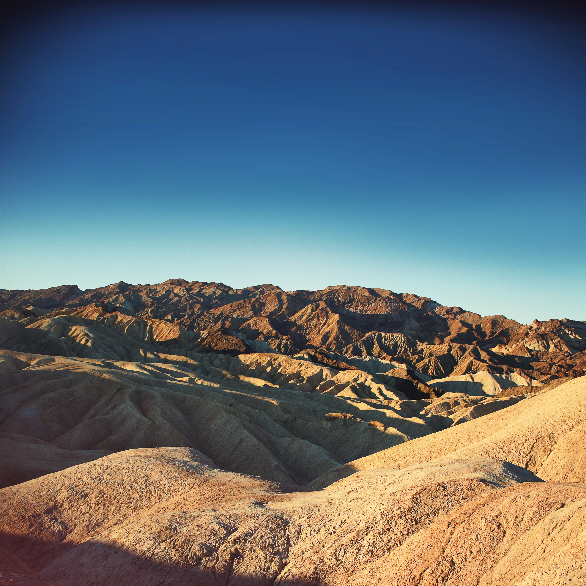
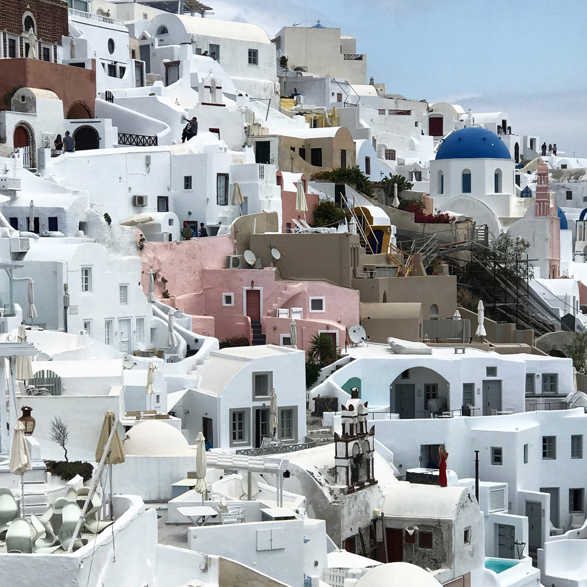
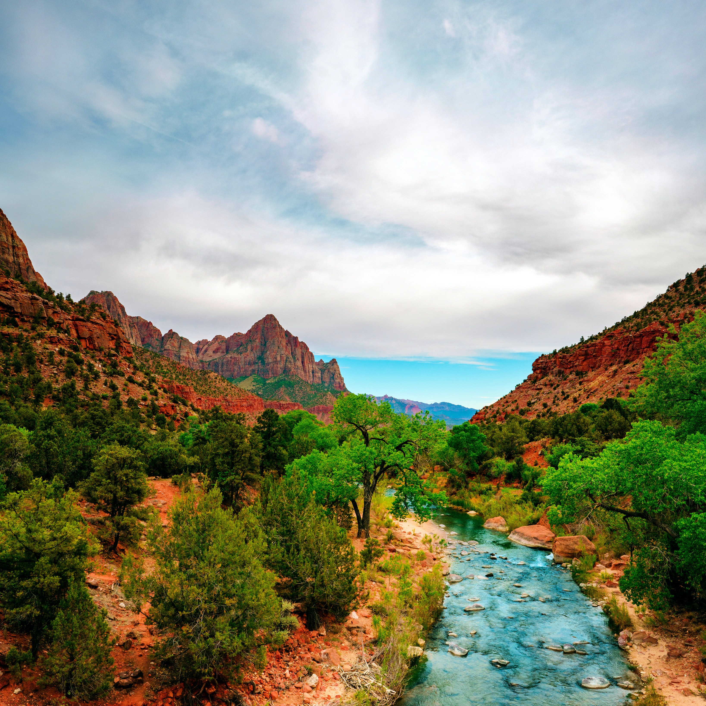

Living in California has made it very easy to travel to many of the
most beautiful national parks in the country. Death valley, despite it's name,
is a beautiful desert with sand dunes, rocks and more. Paris, France is another beautiful city full of old architecture,
arguably some of the best restaurants in the world, and great culture. Above is
an evening view of the Eiffel Tower.

Santorini, Greece is a very small, but lively island off the coast of Greece.
Just a short flight from Athens, the island is full of life, both day and night, and
worth exploring evey nook and cranny.

Another national park just nextdoor to me in California is Zion National Park.
A great place for camping, hiking, climbing, staring up at the night sky, and adoring the
vast red rocks and canyons.